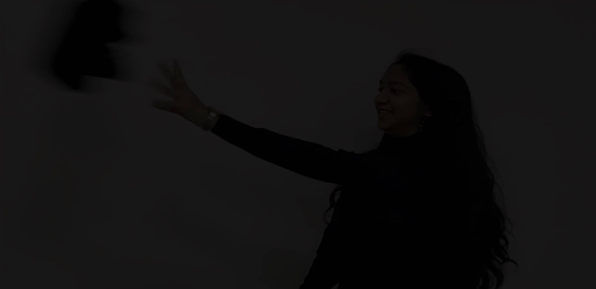
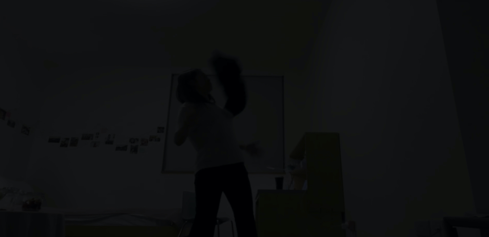
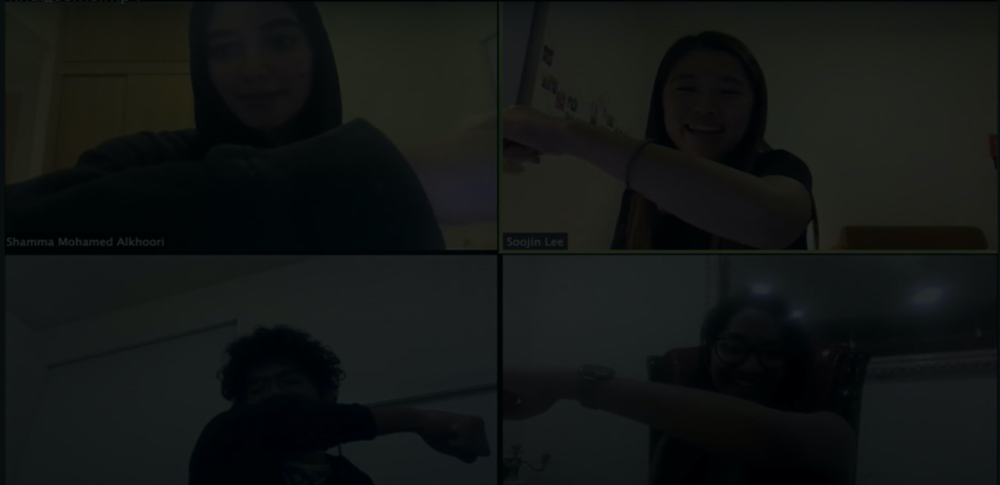

"Instead, together WE can
Distant Socialize"
"When "i" is replaced with "we" even "illness" becomes "wellness".
2020 has surprised us with unexpectedness and we all have at one point felt disconnected, a sense of isolation and --, but we can stilsl socialize and keep in touch with loved ones with some creativity. Instead of Social, distancing, we can distant socialize to keep in touch with loved ones. This 2minutes short film is all about breaking the physical barrier and stay in touch with some jolly moments with friends! Together WE, Can do it!